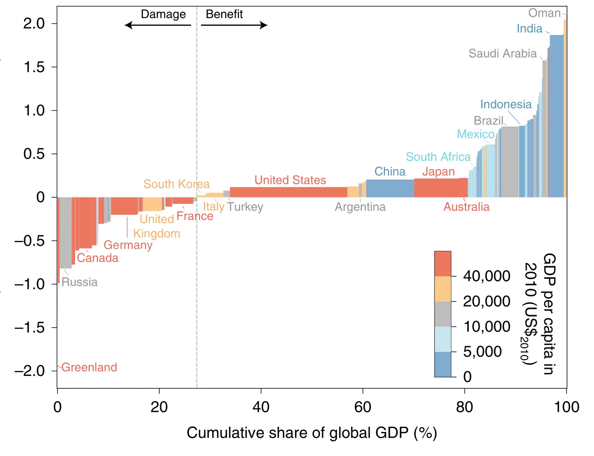

Climate effects of aerosols reduce economic inequality
Key finding. Anthropogenic aerosol emissions were cooling the Earth by 0.72 plus or minus 0.02 degrees Celsius in 2010 relative to a world without them, and because that cooling benefits hot low-income economies while harming cold high-income ones, it reduced the ratio of per capita GDP between the richest and poorest population-weighted deciles by about 1.0 percent.

What question did this research address?
Anthropogenic aerosols cool the planet and so mask part of the warming caused by greenhouse gases. Their health effects are severely negative and almost certainly outweigh any climate benefit, but the climate effect itself is unevenly distributed.
Empirical work on climate and growth has found that warming harms economies in already warm places and can benefit economies in cold ones. Aerosol cooling should therefore act in the opposite direction in each.
This work asked a question that follows directly: has aerosol-induced cooling helped poorer tropical economies and hurt wealthier high-latitude ones, and if so, what has it done to the distribution of income between countries?
What did we find?
Fully coupled climate simulations run with and without anthropogenic aerosol emissions put the aerosol cooling in 2010 at 0.72 plus or minus 0.02 degrees Celsius.
Applying empirical temperature-to-growth damage relationships to that cooling pattern gives opposing effects by region — economic benefit in the warm, largely poorer tropics and economic harm in the cold, largely richer high latitudes — so the net effect on global output is small.
The distributional effect is not small in the same sense. Aerosol cooling reduces the ratio of per capita GDP between the top and bottom population-weighted deciles by 1.01 percent (90 percent confidence interval 0.59 to 1.56 percent), with greater than 99 percent likelihood that the ratio falls at all.
The direction of the inequality result holds across most of the alternative damage functions tested, even though the estimated effect on global GDP ranges from a loss of 0.1 percent to a gain of 0.51 percent depending on which function is used.
Why does it matter?
Aerosol emissions are falling as countries clean up their air, which is unambiguously good for human health. This work identifies a consequence that runs the other way — the same clean-up removes a cooling that has been disproportionately benefiting poorer tropical economies, and so will tend to widen global economic inequality.
It reframes the aerosol masking effect as a distributional question rather than only a question about global mean temperature. The global average conceals large offsetting regional effects.
The result strengthens the case for treating air quality policy and climate policy together, since the equity consequences of the two are entangled through this channel.
Citation, data, and code
Yixuan Zheng, Steven J. Davis, Geeta G. Persad, and Ken Caldeira (2020). Climate effects of aerosols reduce economic inequality. Nature Climate Change 10, 220-224.